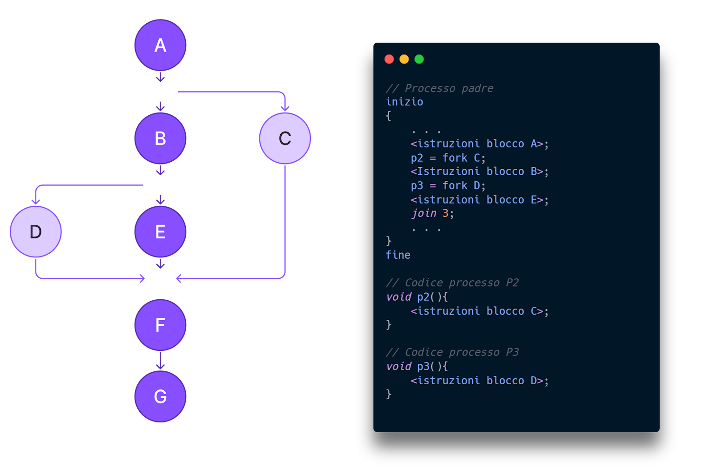
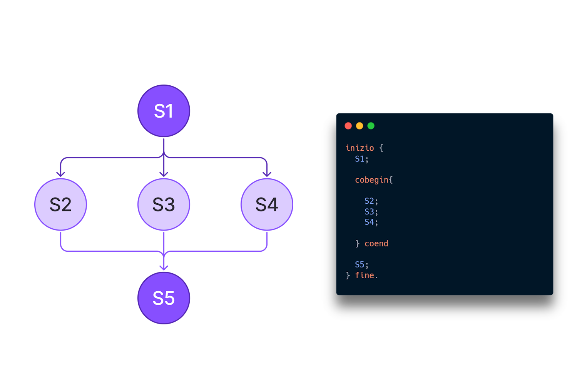

Processi Sequenziali: fork e cobegin-coend
Il comando fork
Il comando fork viene usato per creare un nuovo processo figlio a partire da quello
corrente (detto processo padre).
È una chiamata di sistema tipica nei sistemi UNIX/Linux. Dopo la chiamata a fork(), il
processo viene duplicato:
entrambi i processi (padre e figlio) continueranno l’esecuzione dal punto successivo alla chiamata.
Il valore di ritorno di fork() permette di distinguere i due processi:
0→ processo figlio> 0→ processo padre (ritorna il PID del figlio)< 0→ errore nella creazione del processo
Esempio in pseudocodice:

In questo esempio, dopo la chiamata a fork(), verranno stampati messaggi da entrambi i
processi.
L’output può cambiare a seconda di quale processo il sistema esegue per primo.
Il costrutto cobegin - coend
Il costrutto cobegin ... coend viene usato per eseguire più processi in parallelo
(concorrentemente).
Ogni blocco all’interno viene eseguito come un processo indipendente. Quando tutti i blocchi sono
terminati,
il programma continua dopo coend.
Questo tipo di costrutto è tipico nei linguaggi e negli pseudocodici usati per spiegare la programmazione concorrente, anche se non è presente nei linguaggi C/C++ standard.
Esempio in pseudocodice:
In questo esempio, i tre blocchi A, B e C vengono eseguiti contemporaneamente. Il programma attende che tutti e tre finiscano prima di proseguire.